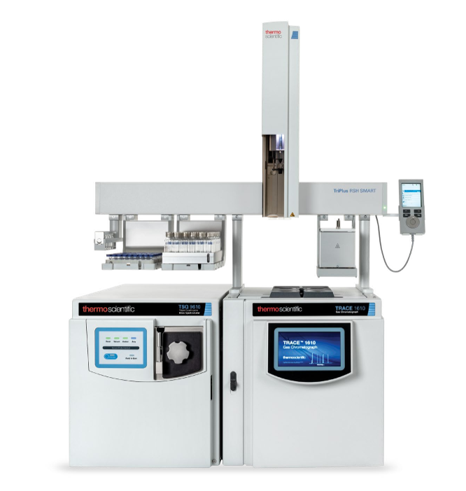

Umidade na fonte
N₂ (Vazamento)
O₂ (Vazamento)
| Nº Tune | Data | Operador | Filamento | EMV (V) | T Interface (°C) | m/z 69 (%) | m/z 219 (%) | m/z 502 (%) | m/z 18 | m/z 28 | m/z 32 | Status |
|---|
| Componente | Frequência | Último | Próximo | Status |
|---|
| Dimensão | Código/Modelo | Nº de Série | Instalação | Total Cortes | Comp. Est. | Status | Ações |
|---|
| Data | Responsável | Supervisão | Problema / Causa | Ação Corretiva | Resultado |
|---|---|---|---|---|---|
| — | — | — | Nenhuma manutenção corretiva registrada. Use o formulário abaixo para adicionar. | ||
![Logo]()
UFRJ - Instituto de Química
Laboratório de Apoio ao Desenvolvimento Tecnológico
1. Instruções gerais
1.1. Abrir um novo Livro de Registro no início de cada ano, pelo menos, ou sempre que necessário; certificar-se do correto arquivamento dos Livros de Registro anteriores.
1.2. Nomear o Livro de Registro como CG-EM_RegistroXX_AAAAMMDD, em que XX corresponde ao número da Chemstation vinculada ao sistema de CG-QqQ e AAAAMMDD corresponde à data invertida de abertura do Livro de Registro. Exemplo: CG-QqQ_Registro10_20150109.
1.3. Salvar o arquivo em local apropriado, definido pelo responsável pelo equipamento, em pasta de backup automático.
2. Aba Operação-Manutenção
2.1. Na coluna Data, registrar a data do registro no formato DD/MM/AAAA.
2.2. Na coluna Operador, registrar as iniciais do nome do operador responsável pela verificação e manutenção.
2.3. No campo Geral, coluna Tambiente, registrar o valor da temperatura do laboratório (em ºC).
2.4. No campo Geral, coluna Sistema desligado/religado, registrar DESL para os dias em que o sistema CG-EM for desligado, REL para os dias em que o sistema for religado e DESL/REL para os dias em que o sistema for desligado e religado. Para os demais dias, deixar a célula em branco.
2.5. No campo CG, coluna Troca do cilindro do gás de arraste, registrar SIM para os dias em que for realizada a troca do cilindro de He. Para os demais dias, deixar a célula em branco.
2.6. No campo CG, coluna Corte da coluna, registrar a medida (em cm) do corte da coluna, nos dias em que este procedimento for realizado. Para os demais dias, deixar a célula em branco.
2.7. No campo CG, coluna Limpeza do injetor, registrar SIM para os dias em que for realizada limpeza do injetor. Para os demais dias, deixar a célula em branco.
2.8. No campo CG, coluna Pressão no injetor, registrar a pressão no injetor do CG, em psi.
2.9. No campo CG, coluna tR do PI, registrar, quando houver, o tempo de retenção do padrão interno, em minutos. Para os dias em que não houver injeção do PI, deixar a célula em branco.
2.10. No campo CG, Substituição de componentes, coluna Troca de septo, registrar SIM para os dias em que for efetuada troca do septo do injetor. Para os demais dias, deixar a célula em branco.
2.11. No campo CG, Substituição de componentes, coluna Troca de liner, registrar SIM para os dias em que for efetuada troca do liner do injetor. Para os demais dias, deixar a célula em branco.
2.12. No campo CG, Substituição de componentes, coluna Troca de coluna, registrar SIM para os dias em que for efetuada troca da coluna cromatográfica. Para os demais dias, deixar a célula em branco.
2.13. No campo CG, Substituição de componentes, coluna Código da coluna, registrar o código da nova coluna instalada. Para os dias em que não for efetuada troca da coluna, deixar a célula em branco.
2.14. No campo CG, Substituição de componentes, coluna Série da coluna, registrar o número de série da nova coluna instalada. Para os dias em que não for efetuada troca da coluna, deixar a célula em branco.
2.16. No campo Espectrômetro de massas, coluna Limpeza da fonte, registrar SIM para os dias em que a limpeza da fonte for efetuada. Para os demais dias, deixar a célula em branco.
2.17. No campo Espectrômetro de massas, coluna Troca do cilindro do gás de colisão, registrar SIM para os dias em que for realizada a troca do cilindro de N2. Para os demais dias,deixar a célula em branco.
2.18. No campo Espectrômetro de massas, coluna Troca da fonte, registrar SIM quando a troca da fonte for efetuada. Para os demais dias, deixar a célula em branco.
2.19. No campo Espectrômetro de massas, coluna Temp. inferface, registrar a temperatura da interface, em ºC, antes da realização do tune. Para os dias em que não for realizado tune, deixar a célula em branco.
2.20. No campo Espectrômetro de massas, coluna Nome da pasta do Autotune, registrar o nome atribuído a pasta do tune do equipamento, para os dias em que for efetuado tune. Para os demais dias, deixar a célula em branco.
2.21. No campo Espectrômetro de massas, coluna Abundância relativa m/z 69, registrar a abundância relativa do íon m/z 69 em relação ao pico base do calibrante, para os dias em que for efetuado tune. Para os demais dias, deixar a célula em branco.
2.22. No campo Espectrômetro de massas, coluna Abundância relativa m/z 219, registrar a abundância relativa do íon m/z 219 em relação ao pico base do calibrante, para os dias em que for efetuado tune. Para os demais dias, deixar a célula em branco.
2.23. No campo Espectrômetro de massas, coluna Abundância relativa m/z 502, registrar a abundância relativa do íon m/z 502 em relação ao pico base do calibrante, para os dias em que for efetuado tune. Para os demais dias, deixar a célula em branco.
2.24. No campo Espectrômetro de massas, coluna Temperatura da fonte, registrar a temperatura da fonte, em ºC, antes da realização do tune. Para os dias em que não for realizado tune, deixar a célula em branco.
2.25. No campo Espectrômetro de massas, coluna Temperatura Q1, registrar a temperatura do quadripolo 1 disponível no relatório do tune em Instrument Actuals , em ºC, antes da realização do tune. Para os dias em que não for realizado tune, deixar a célula em branco.
2.26. No campo Espectrômetro de massas, coluna Temperatura Q2, registrar a temperatura do quadripolo 2 disponível no relatório do tune em Instrument Actuals , em ºC, antes da realização do tune. Para os dias em que não for realizado tune, deixar a célula em branco.
2.27. No campo Espectrômetro de massas, coluna High Vacuum, registrar o valor do vácuo, em Torr, disponível no relatório do tune em Vacuum. Para os dias em que não for realizado tune, deixar a célula em branco.
2.28. Nos dias em que for realizado tune, registrar 1 ou 2 no campo Espectrômetro de massas, coluna Filamento, conforme o filamento que esteja acionado, vinculado ao arquivo do tune. Para os dias em que não for realizado tune, deixar a célula em branco.
2.29. No campo Espectrômetro de massas, coluna Voltagem do Repeller , registrar o valor da voltagem do Repeller, em V, disponível no relatório do tune em Ion Source . Para os dias em que não for realizado tune, deixar a célula em branco.
2.30. No campo Espectrômetro de massas, coluna Max Gain Factor , registrar o valor do parâmetro Max Gain Factor disponível no relatório do tune em Detector . Para os dias em que não for realizado tune, deixar a célula em branco.
2.31. Nos dias em que for realizado tune, registrar a voltagem da eletromultiplicadora no campo Espectrômetro de massas, coluna EMV, em V. Para os dias em que não for realizado tune, deixar a célula em branco.
2.32. No campo Espectrômetro de massas, Abundância relativa ao m/z 69, coluna m/z 18, registrar a abundância relativa do íon m/z 18 em relação ao m/z 69 disponível no relatório em Diagnostic Information, indicativa de umidade na fonte, para os dias em que for efetuado tune. Para os demais dias, deixar a célula em branco.
2.33. No campo Espectrômetro de massas, Abundância relativa ao m/z 69, coluna m/z 28, registrar a abundância relativa do íon m/z 28 em relação ao m/z 69, disponível no relatório em Diagnostic Information, indicativa de N2 (vazamento) na fonte, para os dias em que for efetuado tune. Para os demais dias, deixar a célula em branco.
2.34. No campo Espectrômetro de massas, Abundância relativa ao m/z 69, coluna m/z 32, registrar a abundância relativa do íon m/z 32 em relação ao m/z 69, disponível no relatório em Diagnostic Information, indicativa de O2 (vazamento) na fonte, para os dias em que for efetuado tune. Para os demais dias, deixar a célula em branco.
2.35. No campo Número de injeções, registrar o número de injeções feitas no dia. Para os dias em que não for feita nenhuma injeção, preencher com 0 (zero).
2.36. O campo Número de injeções com o mesmo liner só pode ser preenchido na primeira linha do Livro de registro, resgatando o histórico de injeções de um Livro de registros anterior ao novo livro aberto. Para as demais linhas, ele fará a contagem do total de injeções feitas usando um mesmo liner. É indicativo da necessidade de troca do liner.
2.37. Na coluna Observações, registrar textualmente quaisquer informações relevantes em relação à manutenção e/ou às injeções efetuadas.
3. Aba Registro de Manutenção Corretiva
3.1. Na coluna Data, registrar a data da identificação do problema no formato DD/MM/AAAA.
3.2. Na coluna Responsável, registrar as iniciais do nome do responsável pela condução da manutenção corretiva.
3.3. Na coluna Supervisão, registrar as iniciais do nome do supervisor do setor.
3.4. Na coluna Descrição do problema e possíveis causas, descrever a falha apresentada pelo sistema e possíveis causas para sua ocorrência.
3.5. Na coluna Procedimentos de manutenção/correção, descrever as ações corretivas tomadas para solução do problema.
3.6. Na coluna Resultado da manutenção/correção, descrever o procedimento de verificação da eficácia da ação corretiva e seu resultado.
3.7. Na coluna Observações, registrar textualmente quaisquer informações relevantes sobre o problema do sistema e/ou a ação corretiva.
EX.191/2020 V.00 de 14/02/2020
UFRJ - INSTITUTO DE QUÍMICA
LABORATÓRIO DE APOIO AO DESENVOLVIMENTO TECNOLÓGICO
Planilha EX.106/2015 V.00 de 19/01/15.